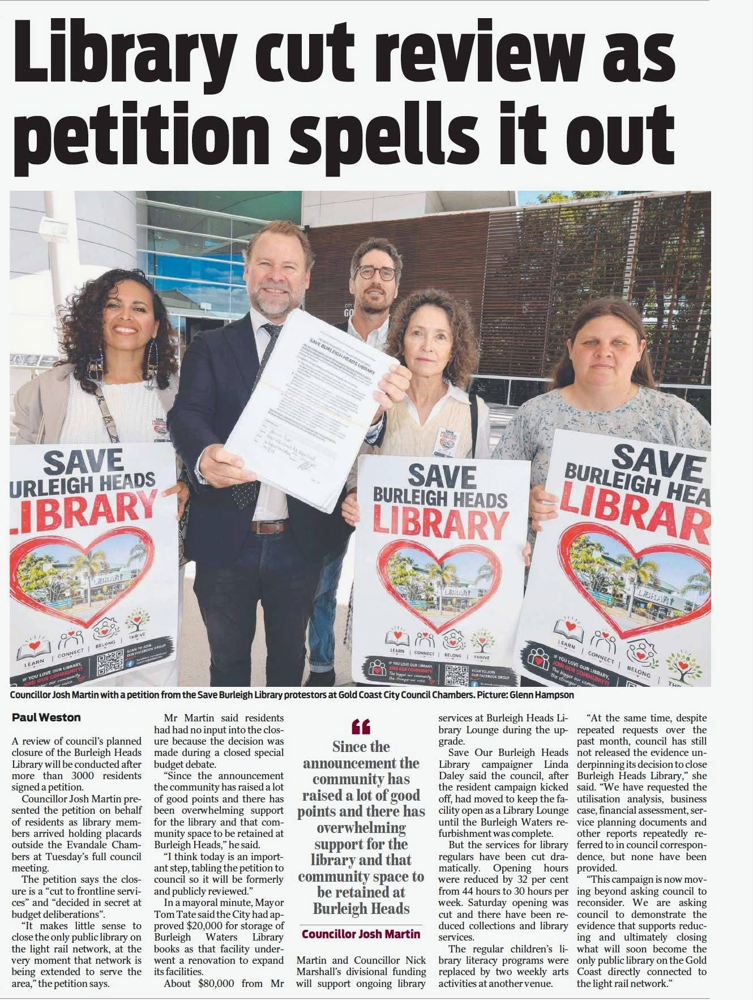

Media coverage
The campaign, as covered by the press
Television, radio, and print coverage of the fight to save Burleigh Heads Library, most recent first.
'Catastrophic': MP fights to save Burleigh library and car park
Burleigh MP Hermann Vorster warned that closing the library and selling the neighbouring Alex Black Car Park would be "catastrophic" for the village. Article is behind the Bulletin's paywall — this summary is based on the Facebook post caption only.
Shelved: Library closure stalls as thousands sign petition
Reported on council's confirmation that Burleigh Heads Library would stay open until the Burleigh Waters refurbishment is complete. Campaign organiser Linda Daley said council had still not supplied the utilisation analysis, business case and other documents behind the closure decision, despite repeated requests.
Library cut review as petition spells it out
By Paul Weston. A review of council's planned closure will be conducted after more than 3,000 residents signed a petition. Cr Josh Martin presented the petition to council, noting residents "had had no input into the closure because the decision was made during a closed special budget debate." Campaigner Linda Daley said council had still not released the utilisation analysis, business case, financial assessment and service planning documents underpinning the closure decision, despite repeated requests.

"The fate of the Burleigh Library hangs in the balance..."
Live cross the day before the petition was due to be tabled to council, previewing that a reversal of the closure decision was still possible.
Burleigh Heads Library Wins Reprieve as Campaigners Vow to Continue Fight
Locals win temporary reprieve for Burleigh Heads library
Reported that council confirmed the branch — due to close that day — would remain open until the Burleigh Waters refurbishment finishes, following weeks of rallies and a petition that had attracted thousands of signatures.
Nicole Dyer Morning Show
Pre-recorded answers to questions with resident Sarah-Leigh McMahon, following the announcement on Channel 9 news the previous day that the library would remain open temporarily until the Burleigh Waters refurbishment was complete.
Breaking: library to stay open until at least September
Broke the news that the library — originally due to close the next day — would remain open until at least September.
Community rallies against Burleigh Heads Library closure
Reported that the closure decision was made in April but not announced until June — about six weeks before the scheduled closure. Covered Burleigh MP Hermann Vorster's petition, which had attracted an estimated 3,000 signatures in ten days, and resident Sarah-Leigh McMahon's comments on the impact on women, children and older residents.
'It's more than books': Thousands sign petition to save their local library
By Rebecca Masters. Reported on the morning's protest outside the library, where locals gathered to hand over a petition with thousands of signatures. Resident Sarah-Leigh McMahon said "it's the heart of the community" and that losing the community space itself — not just the books — is what residents feared most.
"They put up with years of noise, dust and disruption..."
Reported that council decided to close the library behind closed doors, without community consultation, and would convert what it considers its least popular branch into an arts hub. Noted the nearest library is several kilometres away and due for an upgrade, and that local MP Hermann Vorster had started a petition — since grown to thousands of signatures — to present to council.
Nicole Dyer Morning Show
Pre-recorded answers to questions with resident Sarah-Leigh McMahon, followed by the same questions put to Deputy Mayor Mark Hammel.
Interview with Cr Josh Martin and Bec Barnett
Under-used Burleigh library to close as council reveals major arts hub plan
Seen coverage we've missed?
Send it through the Facebook group and we'll add it to this page.